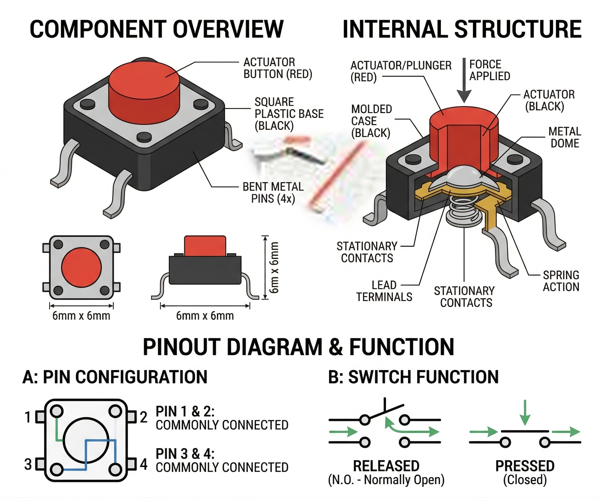

A Pushbutton is a simple momentary tactile switch. It completes an electrical circuit only while the button is physically pressed.

Tactile switches have four pins, but they are internally connected in pairs.
| Pin Label | Function |
|---|---|
| 1 / 2 | Left-side pair. Connect one to a digital input. |
| 3 / 4 | Right-side pair. Connect one to GND (if using pull-up) or 5V (if using pull-down). |
During a simulation, simply click the button with your mouse to press it. It will remain "pressed" as long as you hold the mouse button down, and release instantly when you let go.
The most reliable way to use a button is with the internal INPUT_PULLUP resistor.
const int buttonPin = 2; // the number of the pushbutton pin
const int ledPin = 13; // the number of the LED pin
int buttonState = 0; // variable for reading the pushbutton status
void setup() {
pinMode(ledPin, OUTPUT);
// initialize the pushbutton pin as an input with internal pull-up:
pinMode(buttonPin, INPUT_PULLUP);
}
void loop() {
// read the state of the pushbutton value:
buttonState = digitalRead(buttonPin);
// check if the pushbutton is pressed. If it is, the buttonState is LOW:
if (buttonState == LOW) {
digitalWrite(ledPin, HIGH); // turn LED on
} else {
digitalWrite(ledPin, LOW); // turn LED off
}
}